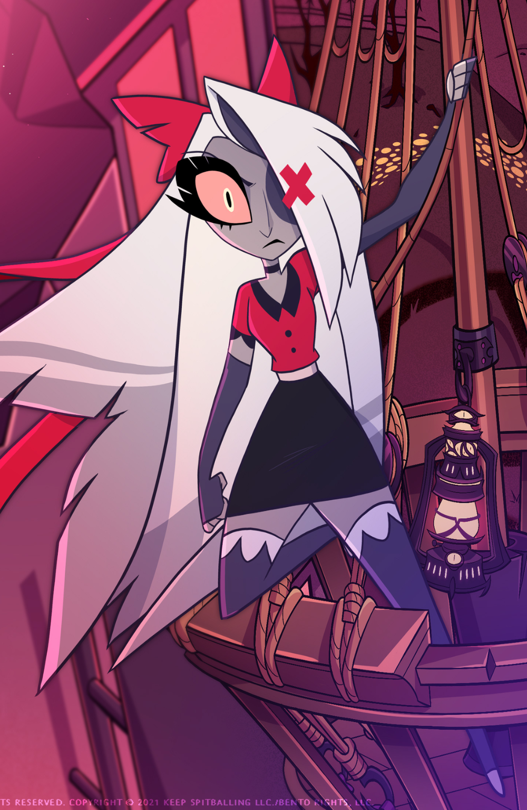

Vaggie(contem spoilers)
“Quando vi seu rosto, você me fez sentir como um estranho em um
lugar totalmente novo.
E foi tão bom ser compreendido. Há tanta coisa que eu gostaria de poder dizer. Então eu... eu
serei sua armadura.
Faça o que for preciso, eu cometerei os erros. Passarei minha vida sendo seu parceiro."
Vaggie é um anjo e ex-exorcista. Ela é a deuteragonista do Hazbin Hotel e atua como gerente do
Hazbin Hotel.
Personalidade
Vaggie é um anjo pragmático e cauteloso que dedica grande parte de seu tempo tentando apoiar Charlie
em sua visão para
o hotel, bem como orientando-a para longe de tantos problemas ou humilhações quanto possível.
Ela é durona, mas tem um coração de ouro. Leal e gentil com aqueles de quem cuida, mas com pouca
paciência e confiança,
Vaggie tende a ser muito reativa, muitas vezes assumindo uma postura defensiva imediata (com um
ataque pronto) quando
se trata de lidar com ameaças potenciais contra ela mesma ou Charlie.
Embora ainda não esteja claro se Vaggie aceita totalmente o conceito de redenção de Charlie, ela o
defende apaixonadamente dos pecadores mais céticos
e apoia totalmente sua ideia, tentando fazer tudo o que pode para ajudar Charlie.
Vaggie parece ser bastante prudente nos negócios, esforçando-se ao máximo para cumprir a função que
lhe foi designada como
gerente do hotel, mesmo com uma falta inicial de recursos, uma propriedade muito degradada e falta
de pessoal qualificado.
Quando ela era uma Exorcista, ela era uma máquina de matar implacável, tendo massacrado milhares de
Pecadores durante muitos Extermínios.
No entanto, ela mudou de ideia quando encontrou uma criança pecadora indefesa em um beco. Incapaz de
matá-los, ela os deixou ir. Lute
assistiu com desgosto e declarou sua "sujeira pecadora", arrancando seu olho esquerdo e arrancando
suas asas como punição, deixando-a
mutilada e abandonada. Pouco depois, ela conheceu Charlie, que lhe prestou os primeiros socorros. Os
dois eventualmente se apaixonaram e
Vaggie tornou-se leal e protetor com ela. Isso também pode ter ajudado Vaggie a abandonar a maioria
de seus modos implacáveis e a mudar
para melhor.
Design

|
Vaggie passou por várias fases de desenvolvimento antes de seu projeto inicial. Ela recebeu seu primeiro redesenho em 2015, mudando para um visual com tema dos anos 80 para combinar com a data de sua morte na década de 1980. No entanto, esta data foi posteriormente alterada para 2014 e o personagem acabou surgindo no final do processo com o design mais pastel-gótico finalmente definido para o piloto. |

|
Em seu projeto piloto, o cabelo de Vaggie era da mesma cor, mas as listras
no final eram rosa claro.
Seu arco era colorido em um tom claro de rosa avermelhado e sua aparência é mais suave e sem
irregularidades.
Ela também usava sombra cinza.
Ela usava o que parece ser um sutiã cinza claro de um ombro só sob um minivestido branco com alças soltas, duas cruzes cinza claro no peito e um acabamento recortado na parte inferior. Além disso, ela também usava um cinto cinza claro na cintura. A gargantilha e as luvas que iam até o braço eram da mesma cor cinza-ardósia claro; sua luva direita cobria toda a mão, enquanto a esquerda estava sem dedos. Ela também usava meias até a coxa com recortes brancos nos punhos; sua direita era cinza claro, enquanto sua esquerda era listrada em rosa claro e cinza claro. |
 |
Vaggie é um anjo de corpo esguio que ostenta sutilmente um design com tema
de mariposa e pele lilás acinzentada.
Ela tem cabelo branco acinzentado na altura dos joelhos com pontas roxas desbotadas e uma
longa franja irregular
que cobre o lado esquerdo do rosto. Na parte de trás da cabeça, ela usa como acessório um
laço de cabelo vermelho
com pequenos rasgos em cada lado e duas longas caudas.
Seu olho direito tem uma esclera rosa claro e uma íris marfim, enquanto seu olho esquerdo foi substituído por um tapa-olho cinza-ardósia que ostenta um formato de "X" vermelho-rosa, que brilha quando ela está com raiva ou irritada. Sua boca tem pequenas presas e lábios pretos. Com gola peter-pan cinza escuro, acabamento cinza escuro nas mangas e dois botões cinza escuro na frente. Ela também usava uma gargantilha e uma minissaia com um cós grosso rosa claro abraçando sua cintura, ambas na mesma cor cinza escuro. Os acessórios de Vaggie incluem um conjunto de luvas de ópera cinza-ardósia sem dedos com meias até a coxa combinando, que incluem vieiras brancas no punho e nos dedos dos pés. |